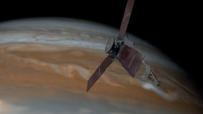

Aplico para aprender
Alumno:
Aplico para aprender
Alumno:
1. Lee el artículo. Analiza sus características y confiabilidad.
La misión Juno llega a Júpiter para revelar los secretos del origen del Sistema Solar
Exploración espacial
La misión Juno llega a Júpiter para revelar los secretos del origen del sistema solar.
¿El rey de los dioses romanos, Júpiter, ocultaba sus travesuras tras un velo de nubes. Solo su esposa, Juno, era capaz de ver a través de ellas y descubrir su auténtica esencia. Una nave de la NASA bautizada con el nombre de esta diosa está a punto de llegar al mayor planeta del sistema solar para revelar los secretos que oculta bajo la misteriosa capa de franjas multicolores que lo envuelve… Después de un viaje de casi

cinco años en el que habrá recorrido 2 800 millones de kilómetros, la nave Juno alcanzará el entorno de Júpiter el martes 4 de julio de 2016, e iniciará la maniobra para ponerse en órbita.
Otros artefactos creados por el hombre han explorado Júpiter y sus lunas –en especial la sonda Galileo, que en 1995 alcanzó su atmósfera y se convertiría en la primera en orbitarlo–, pero nunca hasta ahora se habían acercado tanto. Juno llegará a estar a algo más de 4 000 kilómetros de sus nubes para poder realizar las mediciones encomendadas. Hasta febrero de 2018 completará 37 órbitas, siendo además la primera en hacerlo de polo a polo.
El primer planeta
La misión, perteneciente al programa Nuevas Fronteras y en la que se han invertido 1 100 millones de dólares, pretende comprender el origen y la evolución de Júpiter, que por su tamaño y composición se considera el primer planeta que se formó en torno al Sol. Bajo su espesa cubierta nubosa, los científicos esperan hallar respuestas sobre los procesos y condiciones que gobernaron el sistema solar durante su formación y conocer cómo se generan los sistemas planetarios en torno a otras estrellas.
Grandes paneles solares
Esta es la primera nave alimentada con energía solar que llega tan lejos y, puesto que la órbita de Júpiter está cinco veces más alejada del Sol que la de la Tierra, la insolación que recibe es 25 veces menor que en nuestro planeta. Para aprovecharla al máximo lleva tres paneles solares que abarcan 20 metros desplegados, como una cancha de baloncesto, con 19.000 células un 50% más eficientes y resistentes a la radiación que las de las misiones de hace dos décadas.
En la nave viajan tres pequeñas figuras de Lego: una del dios Júpiter, otra de la diosa Juno y una tercera de Galileo Galilei, el científico italiano que observó el planeta en el siglo XVII y descubrió sus cuatro grandes lunas. Esta «tripulación» responde a un programa conjunto de la NASA y la compañía juguetera para motivar a los niños en áreas como la ciencia, la tecnología, la ingeniería y las matemáticas. También se ha incorporado una cámara que ofrecerá imágenes con una resolución de 25 kilómetros por píxel, con el propósito de acercar al público en general una visión de Júpiter que no había sido posible hasta ahora.